Dai profili che segui
La tua biblioteca,
al servizio del vicinato letterario.
Pubblica i volumi della tua collezione privata, scopri cosa custodiscono i lettori a pochi passi da te, e partecipa a una rete diffusa di prestiti gratuiti.

Le novità delle librerie che segui e i volumi a cui hai messo «mi piace».
Novità da chi segui
I tuoi preferiti
Librerie vicino a te
Le collezioni più vicine e più attive della comunità, ordinate in base alla distanza dalla tua posizione e alla vivacità della libreria. Ogni copertina è generata automaticamente a partire dalle scelte di personalizzazione del suo curatore.
Come funziona
-
Crea la tua libreria
Pochi minuti per registrarti, indicare la tua zona e scegliere l'identità visiva. Persona o ente: scegli tu, la libreria è tua e modificabile in ogni momento.
-
Pubblica i tuoi volumi
Titolo, autore, genere e una breve descrizione; con l'ISBN la copertina arriva da Open Library. Il modulo controlla i dati mentre li scrivi.
-
Presta e prendi in prestito
Chi abita vicino può chiederti un volume in prestito, gratis: accetti o rifiuti, vi accordate nella chat e segui il prestito fino alla restituzione, con la privacy che hai scelto.
Libri in evidenza
Anche su Android o iOS
Installa Lookup sul tuo telefono per un'esperienza più fluida: icona sulla schermata Home e apertura a tutto schermo, come un'app. Le notifiche arrivano in tempo reale mentre Lookup è aperto.